漢字と語句
漢字の基本・熟語・書き取り
1. 漢字の基本
(1) 漢字の成り立ち
選択肢林、月、上、時、明、泳、車、中
| 種類 | 説明 | 例 |
|---|---|---|
| 文字 | 物の形や様子を描いた絵文字を略したもの。 | 、 |
| 指事文字 | 形で表せない数や位置などの事柄を、記号や図形で表したもの。 | 上、中 |
| 会意文字 | 2つ以上の文字を組み合わせて、新しい意味を示したもの。 | 林、明 |
| 文字 | 意味を表す文字と、音を表す文字とを合わせたもの。 | 、 |
(2) 漢字の読み
選択肢素顔、教育、面影、人間、荷物、昔話、指図、座敷
| 種類 | 構成 | 例 |
|---|---|---|
| 音読み | 音＋音 | 、 |
| 訓読み | 訓＋訓 | 、 |
| 読み | 音＋訓 | 、 |
| 湯桶読み | 訓＋音 | 、 |
(3) 同訓異字
おさめる
- 封筒にめる
- 国をめる
- 学業をめる
- 成功をめる
はかる
- 記録をる
- 再起をる
- 身長をる
- 目方をる
とく
- 問題をく
- 絵の具をく
- 教えをく
うつす
- 住所をす
- 文章をす
- 鏡にす
あつい
- い日
- い湯
- い板
つとめる
- 解決にめる
- 会社にめる
- 議長をめる
2. 部首と筆順
(1) 主な部首
| 防 | 性 | ||
|---|---|---|---|
| 残 | 複 | ||
| 雑 | 敗 | ||
| 段 | 別 | ||
| 写 | 登 | ||
| 空 | 蒸 | ||
| 先 | 盛 | ||
| 熟 | 慕 | ||
| 応 | 病 | ||
| 原 | 屈 | ||
| 起 | 近 | ||
| 建 | 聞 | ||
| 区 | 街 |
(2) 誤りやすい筆順（何画目？）
※ 青色で示された画数が、全体の何画目か答えよ。
※ 画像が表示されない場合は、画像ファイル(28.png〜47.png)を同じフォルダにアップロードしてください。
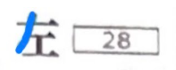
何画目？
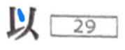
何画目？
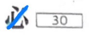
何画目？
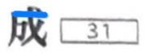
何画目？
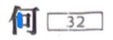
何画目？
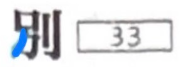
何画目？
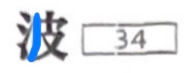
何画目？
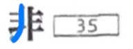
何画目？
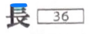
何画目？
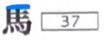
何画目？
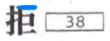
何画目？
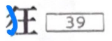
何画目？
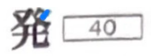
何画目？
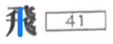
何画目？
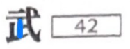
何画目？
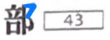
何画目？
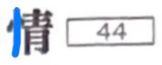
何画目？
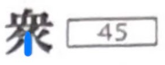
何画目？
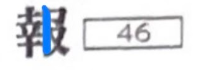
何画目？
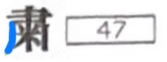
何画目？
3. 熟語の基本
(1) 同音異義語
| コウセイ | 論文の | 非行少年を | に伝える | 文章を |
|---|---|---|---|---|
| タイショウ | 研究の | 左右 | 療法 | 的な意見 |
| ツイキュウ | 責任を | 真理を | 利益を | |
| ホショウ | 生活を | 人柄を | 損害を | |
| カイホウ | 人質を | 病人を | 一般に | |
| カクシン | 事件の | 成功を | 的な政党 | |
| セイサン | 経費を | 借金を | 勝利の | 物を |
| タイセイ | 政治 | 受け入れ | 得意の | に影響はない |
(2) 三字熟語
| うまくいった喜びで夢中になる | |
| 物事をきちんとしていい加減にしない | |
| 価値や力量をはかる基準 | |
| そのものが本来もっている姿 | |
| うまく後始末をつけるための方策 | |
| 物事の本当のおもしろさ・深い味わい | |
| 思うままにならない（特に経済状態） | |
| 歴史上、今まで一度も起こったことがない |
4. 書き取り演習
(1) 重要漢字
ケンシン的な看護
仕事のジャマ
(2) 同音異字（類似形字）
テッカイ（やめにする）
テッテイ（つらぬく）
ヘイガイ（悪いこと）
カヘイ（ぜに）
(3) 同訓異字
目録にオサめる
注文品をオサめる
国をオサめる
学業をオサめる
薬がよくキく
機転がキく
食事をタつ
縁をタつ
布を細かくタつ
見通しがタつ
社員をトる
指揮をトる
昆虫をトる
(4) 同音異義語
過去をセイサンする
勝利のセイサンがある
本文とタイショウする
責任をツイキュウする
利益をツイキュウする
真理をツイキュウする
災害のホショウをする
安全をホショウする
品質をホショウする